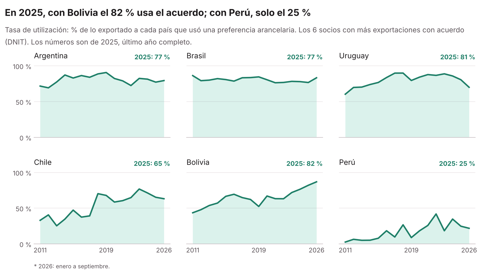
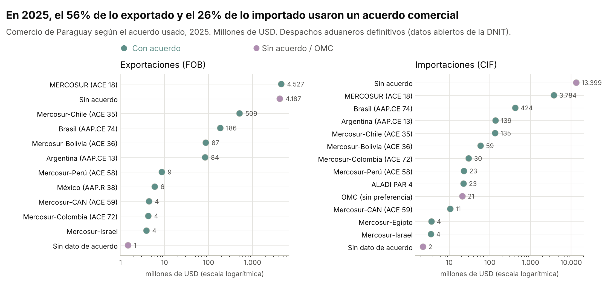
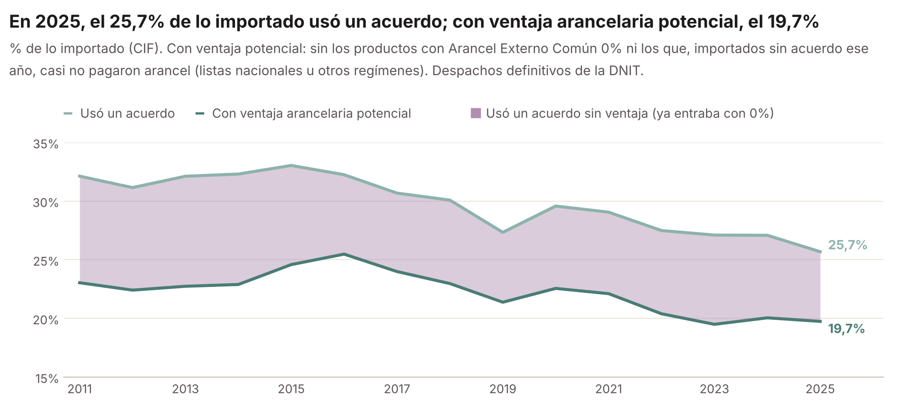
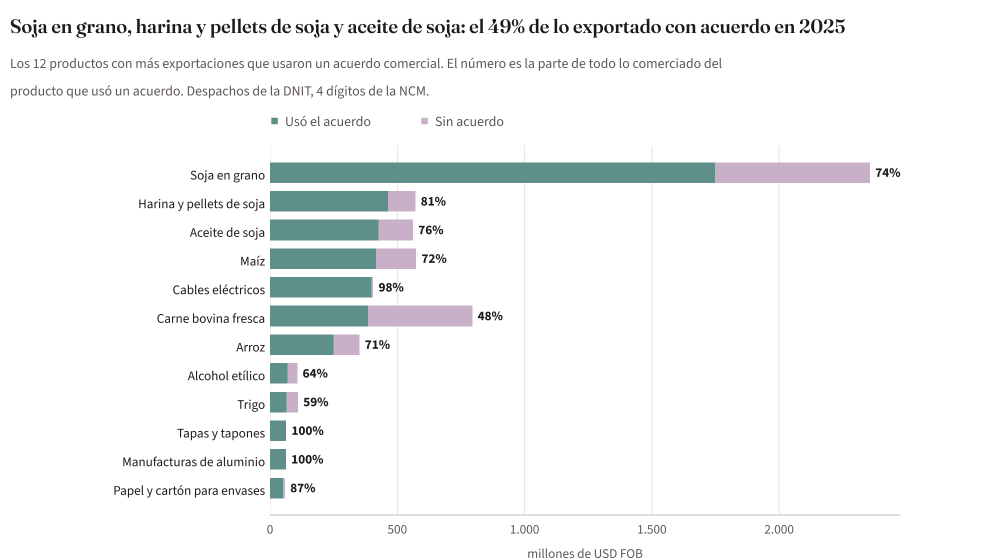
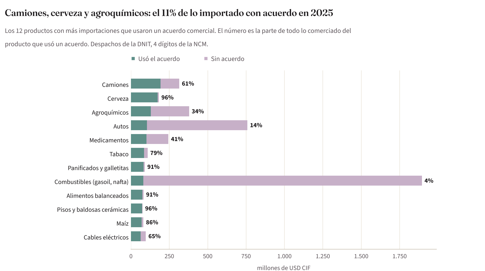

Datos abiertos · Paraguay · 2011–2026
¿Cuánto exporta e importa Paraguay usando efectivamente un acuerdo comercial? Series anuales calculadas con los despachos aduaneros públicos de la DNIT y comparadas con los certificados de origen de la VUE.
Última actualización: 20 de noviembre de 2026 · Qué cambió.
Elegí un país y un año, y te contamos en palabras simples cuánto le vendió Paraguay y cuánto usó un acuerdo comercial.
Barras: lo que Paraguay le vendió a ese país cada año. ■ con acuerdo · ■ sin acuerdo. Valores de la mercadería al salir de Paraguay, según la aduana (DNIT).
La participación del comercio con acuerdo es la parte de lo exportado que usó efectivamente una preferencia de un acuerdo comercial (MERCOSUR, acuerdos del MERCOSUR con terceros países y acuerdos ALADI). Se calcula con los despachos de la DNIT: valor FOB de las exportaciones de origen paraguayo, con y sin acuerdo. En esta página la llamamos también "utilización", pero no es la tasa de utilización de preferencias de los estudios académicos, que divide solo por lo que podría usar una preferencia (los productos con rebaja en el acuerdo). Para calcularla haría falta el arancel de cada país comprador, producto por producto, que no está en estos datos.
Con los socios del MERCOSUR y con Bolivia, la mayor parte de lo exportado usa la preferencia: entre el 77 % y el 82 % en 2025, el último año completo. Con Chile la utilización se duplicó desde 2011 (de 33 % a 65 %), y con Perú sigue siendo baja.

% de lo exportado a cada país que usó una preferencia. El país es el destino que figura en el despacho de la DNIT; el BCP asigna el destino según el certificado de origen, que se tramita después, por eso sus cifras por país pueden diferir (sobre todo en la soja enviada a Argentina y Uruguay), aunque el total y los productos coinciden. Datos de todos los socios: CSV · Excel. Fuente: elaboración propia con datos abiertos de la DNIT.
Buena parte de lo que se despacha hacia Argentina y Uruguay sigue viaje a otros mercados (los puertos y las oficinas comerciales de las empresas están allí). El BCP asigna el destino según el certificado de origen, que se tramita después del despacho. La diferencia con Uruguay casi desapareció desde 2018; con Argentina sigue siendo de varios cientos de millones por año.
Exportaciones (FOB) e importaciones (CIF) de cada año según el acuerdo que se usó en el despacho. El MERCOSUR (ACE 18) es, según el año, entre el 83 % y el 96 % de lo exportado con acuerdo y entre el 81 % y el 96 % de lo importado con acuerdo. Elija el año para ver el detalle:
Ojo: cuatro acuerdos vigentes no aparecen nunca en los despachos de la DNIT: MERCOSUR–India, Paraguay–Taiwán, MERCOSUR–Singapur y el acuerdo automotor con México (ACE 55). Todo el comercio con esos socios figura como "sin acuerdo", pero eso no prueba que no se usen: puede ser que el sistema no tenga un código para ellos. Ver la explicación y las cifras.
Importaciones: usar el acuerdo no siempre da una ventaja. A veces el importador invoca un acuerdo para un producto que ya entraba sin pagar arancel: porque el Arancel Externo Común es 0 %, o porque está en una lista nacional o en otro régimen con arancel 0. Por eso mostramos dos cifras: en 2025, el 25,7 % de lo importado usó un acuerdo (lo que declaró el importador) y el 19,7 % lo usó con ventaja arancelaria potencial, es decir, en productos que sin acuerdo sí pagaban arancel. La diferencia es de entre el 21 % y el 29 % de lo importado con acuerdo, según el año. Es una aproximación: no ve las exoneraciones propias de cada importador ni las rebajas parciales. Ver la serie completa.

Escala logarítmica (puntos en lugar de barras, porque en esta escala el largo de una barra no es proporcional al valor): cada línea vertical es diez veces la anterior, para que se vean a la vez el MERCOSUR y los acuerdos chicos. 2026: enero a septiembre. Datos: CSV · Excel. Fuente: elaboración propia con datos abiertos de la DNIT.

% de lo importado (CIF), años completos. La franja lila es lo que declaró un acuerdo para productos que ya entraban sin pagar arancel (Arancel Externo Común 0 %, o el mismo producto importado sin acuerdo ese año casi no pagó arancel). Datos: CSV · Excel. Fuente: elaboración propia con datos abiertos de la DNIT y las versiones de la NCM (SAREM).
Ahorro: lo importado con acuerdo multiplicado por la tasa que pagó ese año el mismo producto importado sin acuerdo (o, si nadie lo importó sin acuerdo, por el Arancel Externo Común). Pagado sin usar el MERCOSUR: es poco, y una parte es esperable: el azúcar y los vehículos están fuera del libre comercio del MERCOSUR, y hay mercadería que no cumple las reglas de origen; lo que más pagó fueron agroquímicos (partida 3808) y vehículos (lista por producto · Excel). Exportaciones al MERCOSUR sin acuerdo: esos países aplican el Arancel Externo Común (salvo sus excepciones nacionales), así que esas ventas podían usar la preferencia; pero una parte sigue viaje a otros destinos (ver "destino en la aduana y destino final") y otra puede no cumplir las reglas de origen. Son estimaciones: no ven exoneraciones propias de cada importador ni rebajas parciales. Datos: CSV · Excel. Código: python/ahorro_arancelario.py.
El MERCOSUR más que duplicó lo exportado con preferencia entre 2011 y 2025. Fuera de él, el acuerdo con Chile es el que más sumó, y desde 2021 crecen los acuerdos bilaterales con Brasil y Argentina.
Los productos que más usan los acuerdos comerciales. Cada barra es todo lo que se comerció del producto en el último año completo; la parte verde usó un acuerdo, y el número dice qué porcentaje.


Escribí el nombre de un producto o su código NCM (4 dígitos).
Cada despacho dice si usó un acuerdo. No sabemos si los productos que no lo usaron tenían o no una rebaja disponible: algunos no la tienen, otros ya pagan cero para todos o siguen viaje a otro país. Datos por producto: CSV (4 dígitos) · Excel (4 dígitos) · ZIP (8 dígitos) · Excel (8 dígitos).
Los acuerdos no solo mueven más dólares: cada año hay más productos que se exportan con preferencia, y en toneladas la parte con acuerdo pasó del 49 % en 2011 al 70 % en 2025 (en dólares, del 40 % al 56 %). Las toneladas no dependen de los precios: un año con soja cara sube los dólares, no el peso. Lo exportado con acuerdo va a pocos destinos, sobre todo al MERCOSUR: su índice de concentración por destino ronda los 3.800 puntos, contra unos 900 lo exportado sin acuerdo (más de 2.500 es concentración alta).
Las exportaciones de Paraguay se pueden medir con cinco series de cuatro instituciones: la DNIT, la VUE (Ministerio de Industria y Comercio), el BCP (con dos series: la mensual y la detallada por producto y país) y UN Comtrade. Sin la electricidad (que no pasa por la aduana), los despachos de la DNIT quedan entre el 94 % y el 101 % de las exportaciones registradas del BCP en todos los años (es decir, sin las reexportaciones, que el BCP publica aparte, y sin electricidad), y lo que los demás países declaran haber comprado a Paraguay (datos espejo) entre el 94 % y el 106 %. La VUE se aparta en 2022 por un error en sus archivos y, desde 2023, cubre menos. Además, la serie detallada del BCP por producto y país (1994–2023) coincide con lo que Paraguay informa a UN Comtrade en los 30 años, y con la DNIT en el total y en los productos. Los diez cruces de a pares entre las cinco fuentes, con las mayores diferencias y sus explicaciones, están en un Excel: Cruces de las 5 fuentes.
Línea gris: BCP, exportaciones registradas (la misma en los tres). Millones de USD, sin electricidad. DNIT, VUE y BCP en FOB; el espejo en CIF (incluye flete y seguro hasta el comprador). 2026*: enero a septiembre; el espejo de 2026 todavía no existe. En 2022 los archivos de la VUE tienen un error: las partes de calzado (partida 6406) vendidas a Brasil figuran con USD 1.078 millones en octubre y 2.943 millones en noviembre, con solo 57 y 42 toneladas, y los plásticos (partida 3904) con USD 230 millones y 183 toneladas. Por eso la VUE de 2022 supera al BCP. Fuentes: DNIT; VUE (origen de los datos: Ministerio de Industria y Comercio); BCP (SICEX); UN Comtrade. Datos: CSV · Excel. Elaboración propia.
Los Excel por año de la DNIT, el BCP y la VUE, los resultados de esta página y la explicación de cómo leerlos (regímenes, zonas francas, motivo del arancel, Turismo de Compras) están en una página aparte.
Usa solo datos públicos. Cualquier persona puede repetir los cálculos y obtener las mismas cifras.
Cada decisión (qué regímenes se cuentan, cómo se agrupan los acuerdos, qué se excluye) está escrita en el glosario y en archivos de configuración que se cambian sin programar.
El reporte incluye una hoja de control con todo lo excluido. El código está en Python; el procesamiento principal también está en R.
Cada mes nuevo que publica la DNIT se agrega con un comando. Se pueden elegir años, meses y columnas.
Sirve para reportes de comercio, para investigaciones sobre el uso de las preferencias arancelarias y para validar o complementar otras bases de comercio exterior.
Necesita Python 3.10 o superior (o R 4.x). Desde la carpeta del repositorio:
pip install -r python/requirements.txt
python python/descargar_dnit.py --anios 2021
python python/procesar_despachos.py --anios 2021El resultado es un Excel con las hojas Totales por año, Por acuerdo, Control y Detalle. Para el cruce con los certificados de origen:
python python/cruzar_dnit_vue.py --anios 2011-2026En RStudio, abra el proyecto .Rproj y ejecute R/procesar_despachos.R. Las instrucciones completas están en el README.
El detalle de cada concepto, columna y decisión está en el glosario.
Porque la VUE registra todos los certificados de origen emitidos, también los de envíos que no usan una preferencia. Además, la VUE usa el país de destino final y la DNIT el país declarado en el despacho, y la fecha de la VUE es la de emisión del certificado, no la de cancelación del despacho.
Es la participación del comercio con acuerdo: la parte de lo exportado que usó efectivamente una preferencia arancelaria. No es la tasa de utilización de preferencias de los estudios académicos, que divide solo por el comercio que podría usar una preferencia; para eso haría falta el arancel de cada país comprador, producto por producto. Una tasa baja con un socio con el que hay acuerdo puede indicar que los productos no tienen preferencia, que el arancel ya es cero para todos o que cumplir las reglas de origen no conviene.
En la práctica, ninguna: en los dos casos se paga el arancel general, sin rebaja. Sin acuerdo quiere decir que el despacho no pidió ninguna preferencia; es lo normal cuando no hay acuerdo con ese país, o cuando lo hay pero no se usó. OMC quiere decir que se invocó el trato que Paraguay da a todos los miembros de la Organización Mundial del Comercio (el "trato de nación más favorecida"), que no es una rebaja: es el mismo arancel general que paga cualquiera. Por eso en esta página los dos cuentan como "sin acuerdo". La DNIT tiene un código aparte para "OMC" y no publica la regla de cuándo se usa; pesa menos del 1 % de las importaciones y casi nada en las exportaciones. Hay una tercera etiqueta, "sin dato de acuerdo", cuando el despacho no informa nada en ese campo; son montos mínimos: nunca llega al 0,04 % de lo exportado o de lo importado en un año (el máximo es 0,035 % de las importaciones de 2026, enero a septiembre).
No todos. Sí aparecen: el MERCOSUR, los acuerdos bilaterales con Argentina y Brasil, los acuerdos del MERCOSUR con Chile, Bolivia, Perú, la Comunidad Andina, Colombia, Cuba, Israel, Egipto, la SACU y la Unión Europea (desde 2026), el acuerdo con México y la Preferencia Arancelaria Regional de ALADI.
No aparecen, aunque están vigentes: en los despachos de 2011 a 2026, ningún ítem tiene en el campo "acuerdo" un código de estos acuerdos. Por eso todo el comercio con esos socios figura como "sin acuerdo" (las cifras son todo el comercio con el país, no lo que usó el acuerdo):
| Acuerdo | Vigente desde | Comercio con el socio, millones de USD (todo "sin acuerdo") |
|---|---|---|
| MERCOSUR–India | 2009 | 2025: importaciones 188,9; exportaciones 23,2 |
| Paraguay–Taiwán | 2018 | 2025: importaciones 79,4; exportaciones 343,3 |
| MERCOSUR–Singapur | 1/02/2026 | 2026 (enero a septiembre): importaciones 37,3; exportaciones 3,3 |
| ACE 55 MERCOSUR–México (sector automotor) | — | Vehículos de México 2023–2025: 115,6 sin acuerdo; 2,1 con la PAR 4 de ALADI y 0,1 con el acuerdo AAP.R 38 |
Con estos datos no se puede saber por qué. Puede ser que el sistema no tenga un código para esos acuerdos (y entonces, aunque se usen, no quedan registrados en este campo), o que de verdad no se usen (por ejemplo, porque los productos que se comercian no tienen rebaja o porque no conviene cumplir las reglas de origen). Hay una pista a favor de lo primero: Paraguay sí otorga rebajas a la India en algunos productos, y no aparece ningún despacho con ese acuerdo. Para confirmarlo, habría que consultar a la DNIT si esos acuerdos tienen código y cómo se declaran.
No. Es un trabajo independiente hecho con datos públicos. No es una publicación de la DNIT, del Ministerio de Industria y Comercio ni del Banco Central del Paraguay, y no cuenta con su aval. Las cifras oficiales son las que publica cada institución; aquí se explica paso a paso cómo se calculó cada número para que cualquiera pueda revisarlo.
No necesariamente. Muchos productos entran con arancel cero en el país comprador aunque no se use ningún acuerdo, porque ese país ya no les cobra arancel a nadie. En esos casos no hace falta pedir la preferencia. Por eso un porcentaje bajo de uso no quiere decir que se pagó de más: solo dice que no se pidió la rebaja. Para saber si se perdió una ventaja habría que comparar, producto por producto, el arancel general del país comprador con el del acuerdo.
Pasa en las importaciones: el importador declara un acuerdo para un producto que igual pagaba 0 %, porque el Arancel Externo Común es 0 % o porque está en una lista nacional o en otro régimen con arancel 0. Así, el acuerdo figura como "usado" aunque no dio ninguna rebaja. Por eso la página muestra dos cifras: lo que usó un acuerdo (lo declarado: 25,7 % de lo importado en 2025) y lo que lo usó con ventaja arancelaria potencial, es decir, en productos que sin acuerdo sí pagaban arancel (19,7 % en 2025). Entre 2011 y 2025, entre el 21 % y el 29 % de lo importado con acuerdo no tenía ventaja. Ver la serie año por año.
Hay varias razones posibles, y suelen mezclarse:
Con Brasil o Bolivia casi todo lo que se vende tiene rebaja completa y se usa mucho. Con Perú el uso varió entre 18 % y 35 % en los últimos años. Esta página muestra cuánto se usa, no el motivo de cada caso.
La energía de Itaipú y Yacyretá no pasa por la aduana, así que no aparece en los despachos de la DNIT ni en los certificados de origen. Sí la registra el Banco Central del Paraguay (código NCM 2716). Era cerca del 29 % de lo exportado en 2011 y cerca del 11 % en 2025. Para comparar las cuatro fuentes se usa siempre la cifra sin electricidad.
Los años 2011 a 2025 están completos. 2026 está incompleto: en los gráficos llega hasta septiembre, el último mes disponible del Banco Central, para que las fuentes sean comparables; los Excel de la DNIT y de la VUE pueden traer algún mes más (cada archivo lo dice en su hoja Notas). Los datos del Banco Central son preliminares durante dos años y se pueden corregir. La página se actualiza cuando las instituciones publican meses nuevos.
No. Todos los valores están en dólares de cada año (dólares corrientes), tal como los publican las fuentes. Una parte de los cambios de un año a otro se debe a los precios (por ejemplo, el precio de la soja) y no solo a las cantidades. Para ver cantidades, los archivos traen también el peso en kilos.
MERCOSUR intrazona es el comercio entre los socios del MERCOSUR (Argentina, Brasil, Paraguay y Uruguay) bajo su propio acuerdo, el ACE 18. Los acuerdos con terceros países son los que el MERCOSUR firmó como bloque con otros (Chile, Bolivia, Perú, Colombia, Israel, Egipto, entre otros), y en esta página se llaman "preferenciales" junto con los acuerdos de ALADI. Los dos tipos cuentan como "con acuerdo". Más detalle en el glosario.
Porque desde 2011 hay datos de las cuatro fuentes (DNIT, VUE, Banco Central y UN Comtrade) y se pueden comparar entre sí. El Banco Central tiene datos más antiguos, pero sin las otras fuentes no se podría verificar que las cifras sean coherentes.
Porque el BCP suma la electricidad de Itaipú, Yacyretá y la ANDE, que no pasa por la aduana, y cuenta todos los regímenes aduaneros (maquila, zonas francas, courier y otros). Sin la electricidad, la diferencia es pequeña y no va siempre para el mismo lado: entre 2011 y 2025 los despachos de la DNIT quedan entre el 95 % y el 101 % del BCP, y en 2024 la DNIT supera al BCP en USD 73,5 millones.
Sí. El código tiene licencia MIT. Al usar los datos de la VUE, cite "Origen de los datos: Ministerio de Industria y Comercio". Este proyecto es independiente y no cuenta con el respaldo de la DNIT ni del Ministerio.
Dejá tu comentario de forma anónima: no se pide nombre ni correo, y solo lo lee la autora de la página.
Dejar un comentario